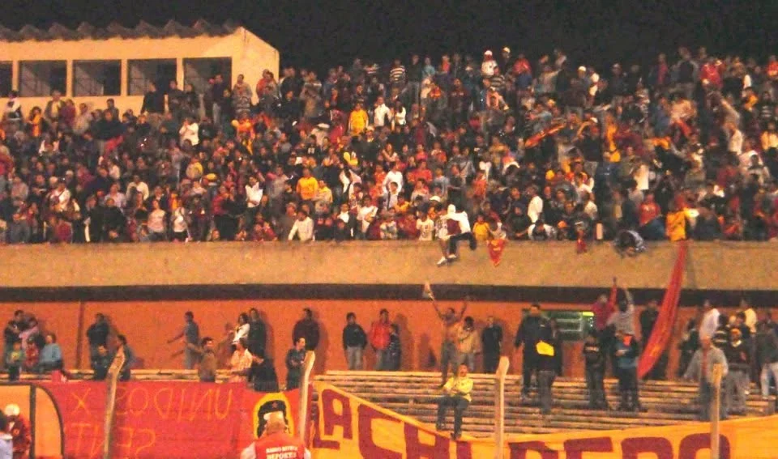
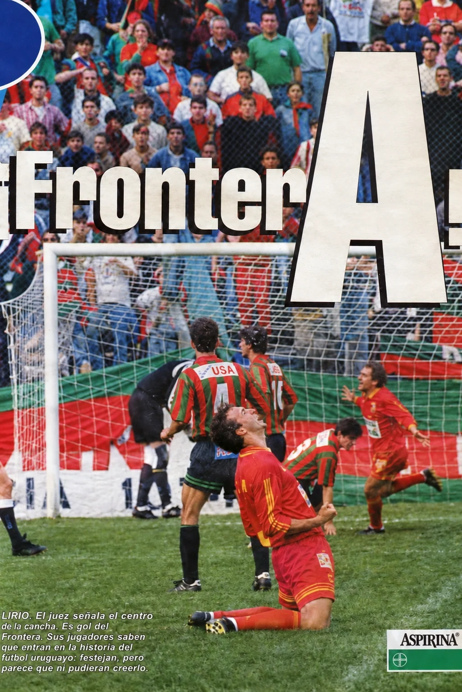
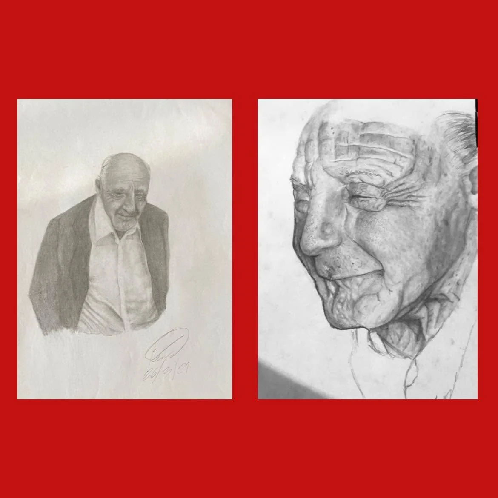

LECTURAS / ARCHIVO
ARTÍCULOS.
La memoria también se escribe. Crónicas, relatos y versos del barrio y del club.

Roberto Araujo
La Cuaró.
¿Leyenda o verdad?
Leer artículo ↗
Archivo histórico
1998: la noche que Rivera no durmió
El día que la Cuaró tocó el cielo.
Leer artículo ↗
Facundo
El santo de Rivera
Un recuerdo sobre el padre Silva.
Leer artículo ↗{% if post.image and post.image != "" %} {% else %}
{% else %} {% endif %}
{% endif %}
{% endif %}{{ post.author | default: 'Frontera Rivera' | escape }}
{{ post.title | escape }}
{{ post.description | escape }}
Leer artículo ↗